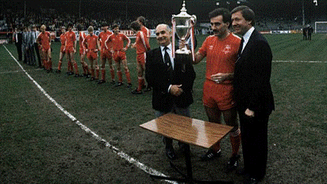

Chương 14

au chức VĐQG lịch sử, Steve Archibald chia tay Aberdeen, đến với Tottenham Hotspur. Trợ lý Pat Stanton cũng rời đội, về làm HLV trưởng Cowdenbeath.Thay thế Stanton là “ông kẹ” Archie Knox. Stanton hiền lành bao nhiêu, thì Knox nóng nảy bấy nhiêu, thậm chí còn nóng hơn cả ông sếp Alex.Alex cùng Knox nợp thành cặp “hắc phong song sát”, hoành hành ngang dọc trước ở giải Scotland, sau đến giải Anh, không những gieo rắc sợi hãi cho học trò, mà còn thường xuyên “khủng bố” trọng tài.
Theo sự phân công của Alex, bản thân ông chỉ đạo những buổi tập buổi sáng, còn Archie Knox trông nom cầu thủ vào buổi chiều. Nhưng chỉ được ít lâu, Knox lên tiếng phàn nàn “ĐM, chẳng hiểu anh mang tôi về đây làm gì.Tôi chẳng có việc gì để làm là sao?Tôi là trợ lý, trách nhiệm của tôi là tập cho cầu thủ mỗi ngày, sao anh cứ giành hết vậy?”Trợ huấn[1] Teddy Scott đứng cạnh cũng góp ý “Phải đấy, Alex, anh cần gì phải ngày ngày ra sân như thế này?Là HLV trưởng, anh chỉ nên quan sát, giữ vai trò một tổng quản.”
Từ đó trở đi, Alex rút về quản lý trên tầm “vĩ mô”.Ông ít ra sân hơn, chủ yếu để cho Archie Knox đứng lớp các buổi tập.Đây cũng là một bước tiến tất yếu.Lãnh đạo một doanh nghiệp nhỏ có thể tự mình đảm nhiệm tất cả các việc, nhưng lãnh đạo doanh nghiệp lớn cần phải biết phân công công việc cho cấp dưới, bản thân chỉ nắm ở thượng tầng.Bóng đá cũng như vậy thôi.Huấn luyện ở Aberdeen tất phải khác huấn luyện ở St Mirren.
Trở lại với giải Scotland, khi Aberdeen lên ngôi mùa 1979-1980, họ trở thành một trong những nhà vô địch…kém nhất trong lịch sử, với vỏn vẹn 48 điểm. Người xem tuy thán phục, nhưng vẫn nghi ngờ: Chú này chắc chỉ ăn may được một mùa; thiên hạ này là của hai “Cụ Cố”, sang năm sau, một trong hai “cụ” ấy lại đăng quang thôi. Alex Ferguson cũng chưa hài lòng với chỉ một chức VĐQG, ông không muốn Aberdeen theo gót Kilmarnock, hay Hibernian, thỉnh thoảng “cuỗm” được một cúp, rồi sau đó lặn mất tăm. Không, ông muốn Aberdeen phải trở nên một thế lực trường cửu, soán ngôi Celtic và Rangers để thống trị Scotland.
Để chuẩn bị cho mùa giải 1980-1981, Alex gieo vào đầu cầu thủ một tâm lý “bước đường cùng”.Ông thuyết phục học trò tin rằng cả thế giới đều chống lại họ, bốn bề đâu đâu cũng là kẻ thù.Trong cảnh “thập diện mai phục” ấy, họ chỉ còn một con đường “quyết tử để quyết sinh”.“Celtic và Rangers đã lũng đoạn nền bóng đá đất nước”, Alex phân tích, “Trọng tài thiên vị họ, quan chức liên đoàn và báo chí cũng bênh họ.Dân Glasgow thì ghét Aberdeen chúng ta.Chúng ta vừa lên ngôi vô địch, họ lại càng tức giận, thế nào cũng họ cũng liên thủ để đập ta cho bằng chết.Các em nghe đây: Chúng ta chỉ còn cách dùng lửa chọi với lửa”.
Khi đến Old Trafford, Alex sẽ tiếp tục sử dụng chiêu “bước đường cùng”.Lúc đầu, ông tuyên bố tất cả đều đứng sau Liverpool. Về sau, khi Liverpool rơi vào quên lãng, và Manchester United đãđứng vững trên đỉnh cao, ông lại bảo: Ai cũng chống United, vì United quá thành công. Hiệu quả của liệu pháp tâm lý này ra sao, chỉ nhìn vào phòng truyền thống của Quỷ Đỏ là đủ rõ.
Tại Pittodrie, liệu pháp này cũng thành công rực rỡ. “Lúc ấy, chúng tôi tin tưởng vào lời HLV”, Gordon Strachan chia sẻ, “Tôi thật sự cảm thấy mình giống như đang bị đẩy tới chân tường.Mỗi lần ra sân, toàn đội đều hăng máu như mười một con quỷ”.Thành công, tuy vậy, chưa đến ngay vào mùa 1980-1981, khi Aberdeen trắng tay. Một trong những nguyên nhân dẫn đến thất bại là sự mất cân đối giữa hai cánh. Do không có tiền vệ trái giỏi, Aberdeen chủ yếu sử dụng cánh phải, nơi Gordon Strachan trấn giữ. Tài năng của Strachan thì không cần phải bàn, nhưng sau khi giành danh hiệu Cầu Thủ Xuất Sắc Nhất Scotland, anh đã bị đối phương để ý rất kỹ, và trận nào cũng bị theo kèm sát sao. Để giảm bớt gánh nặng cho Strachan, Alex ký hợp đồng với học trò cũ: Tiền vệ trái Peter Weir từ St Mirren. Dàn cầu thủ trẻ do Alex đưa về St Mirren trước kia nay đã trưởng thành, đạt đến độ chín muồi. Ông sẽ lần lượt kéo họ sang Aberdeen.
Với bộ khung gồm thủ thành Jim Leighton, các hậu vệ Willie Miller, Alex McLeish, Doug Rougvie, hữu biên Gordon Strachan, tả biên Peter Weir, cùng một Mark McGhee(Cầu Thủ Xuất Sắc Nhất Scotland mùa 1980-1981, SFWA bình chọn) bùng nổ trên hàng tiền đạo, Aberdeen bắt đầu thể hiện sức mạnhhủy diệt tại Scotland.Ba năm liên tiếp (1982, 1983, 1984), họ giành Cúp QG[2]: hai lần gạ gục Rangers, và một lần đánh bại Celtic trong trận chung kết. Nhưng với Alex, chiến thắng thôi vẫn là chưa đủ. Sau trận thắng Rangers 1-0 tại chung kết năm 1983, ông nổi giận chỉ trích cầu thủ kịch liệt: "Một màn trình diễn tồi tệ chưa từng thấy, không thể chấp nhận được. Leighton, cậu là cầu thủ xuất sắc nhất của...Rangers.Cả trận này chỉ có McLeish và Miller là chơi tốt. Chúng ta đoạt cúp chẳng qua ăn may mà thôi." Trên đường về Pittodrie, cả đội bóng tiu nghỉu, hầu như chẳng ai nói với ai một lời. Chưa bao giờ một nhà tân vô địch lại buồn đến vậy!
Sau một đêm suy nghĩ, Alex nhận thấy mình hơi quá: Dù sao CLB cũng đã giành cúp, đâu cần phải nặng lời. Rạng sáng, ông triệu tập cầu thủ, đứng ra chính thức xin lỗi toàn đội. Jim Leighton, người bị chỉ trích đích danh, vẫn còn giận dỗi "Chửi cũng đã chửi rồi, xin lỗi thì được gì", nhưngAlex McLeish và nhiềuđồng đội khác cảm thấy ấm lòng: Đâu có nhiều người thầy biết nhận sai, chịu xin lỗi học trò như thế.
Mùa 1983-1984, Aberdeen đồng thời giành chức VĐQG, bỏ xa đội hạng nhì Celtic bảy điểm, ghi được đến 78 bàn, chỉ thủng lưới 21. Đây là lần đầu tiên, cũng là duy nhất trong lịch sử, một đội bóng ngoài cặp Rangers-Celtic giành cú đúp: VĐQG và Cúp QG. Con số 21 bàn thua thể hiện sự vững chắc nơi hàng thủ Aberdeen; cả Rangers lẫn Celtic đều thua tới 41 trái. Không lạ gì khi thủ quân Willie Miller nhận cùng lúc 2 danh hiệu Cầu Thủ Xuất Sắc Nhất Scotland, từ Hiệp Hội Ký Giả (SFWA) và Hiệp Hội Cầu Thủ (SPFA), còn HLV Alex Ferguson được phong tước Sỹ Quan Đế Chế Anh (OBE)[3]. Say sưa với thành công, Alex ký hợp đồng mới với Aberdeen, nhận mức lương "khủng" 60 000 bảng một năm. Ônglần lượt từ chối những lời mời về làm HLV cho Sheffield United,Rangers, Wolverhampton và Arsenal. Alex cân nhắc đắn đo trước lời mời từ Tottenham, có lúc đã định ký hợp đồng với White Hart Lane, nhưng rồi vì cảm tình sâu nặng với chủ tịch Dick Donald, ông không nỡ bỏ Pittodrie[4].
Khi một đội bóng nhỏ gây được tiếng vang, họ lập tức trở thành mồi ngon cho các "đại gia" xâu xé lực lượng.Aberdeen cũng không là ngoại lệ. Tuy làm mưa làm gió ở Scotland, nếu xét về mặt tài chính, họ vẫn thua xa Rangers và Celtic, chưa nói đến những ông lớn ở Anh, Ý, Tây Ban Nha...Hè 1984, Pittodrie chia tay một lúc ba trụ cột: Mark McGhee, Doug Rougvie, và Gordon Strachan.McGhee chuyển đến Hamburg, còn Rougvie tới Chelsea, với những mức lương gấp đôi lương tại Aberdeen. Trên hàng ghế huấn luyện, Archie Knox cũng ra đi, sang Dundee làm HLV trưởng.
Gordon Strachan luôn mang ơn Alex.Khi Alex tới Pittodrie, Strachan còn vô danh, chưa ai biết đến, thậm chí suýt bị ban lãnh đạo đem bán.Nhận thấy tố chất nơi cậu học trò trẻ, Alex đưa Strachan vào đội hình chính, đào luyện anh thành một ngôi sao quốc tế."Việc Ferguson nhậm chức ở Aberdeen đánh dấu bước ngoặt trong đời tôi", Strachan nói, "nhờ thầy, tôi mới tiến bộ và được tuyển vào ĐTQG Scotland". Tuy nhiên, sau khi tỏa sáng tại World Cup 1982, thu hút sự chú ý của các CLB hàng đầu châu Âu, Strachan cảm thấy Pittodrie trở nên quá nhỏ bé cho tham vọng của mình. Đầu mùa 1983-1984, anh…bỗng dưng thấy buồn.“Em chán rồi, em muốn đi”, Strachan thông báo cho thầy “Đây là mùa cuối cùng em chơi cho Aberdeen”.Alex cố nhiên không muốn mất cầu thủ ngôi sao, nhưng một khi ai đó đã muốn đi, ông cũng không cố giữ.Manchester United từ Anh, Cologne từ Đức, và Verona từ Ý, cả ba đều nhảy vào tranh giành Strachan. Anh ký thỏa thuận với Cologne, nhưng sau đó lại đồng ý chuyển sang…Manchester United, khiến đội bóng Đức điên tiết kiện lên UEFA. Sau rốt, các bên đạt được thỏa thuận với nhau: Strachan sẽ đến Old Trafford, nhưng Aberdeen phải đền bù cho Cologne một số tiền, và United phải sắp xếp sang đá với Cologne một trận giao hữu. Tháng 8-1984, HLV Alex Ferguson đích thân hộ tống Strachan tới Manchester trong lễ ký hợp đồng chính thức.
Mất cả trợ lý lẫn trụ cột, song Alex đã có kế hoạch.Ông tiếp tục đào cái “mỏ” St Mirren, đem về Billy Stark để thay Strachan, và Frank McDougall để thế McGhee.Bên cạnh đó, ông mua hậu vệ Tommy McQueen từ Clyde, đồng thời bổ nhiệm cựu trung vệ Willie Garner vào vị trí cũ của Archie Knox.Tổng số tiền mua Stark, McDougall, và McQueen chỉ có 240 000, trong khi tiền bán McGhee, Strachan, và Rougvie lên đến hơn một triệu.Vậy mà các tân binh thi đấu hiệu quả không kém gì người cũ.Mùa 1984-1985, Aberdeen lần thứ hai liên tiếp lên ngôi VĐQG Scotland[5]; Frank McDougall giành danh hiệu Vua Phá Lưới với 22 bàn thắng. Mùa 1985-1986, CLB giành cú đúp: Cúp QG và Cúp LĐ. Cúp LĐ không mấy quan trọng, nhưng nó giúp Alex Ferguson hoàn tất bộ sưu tập các cúp quốc nội.Cũng tại Cúp LĐ năm đó, hàng thủ Aberdeen một lần nữa thể hiện sức mạnh không thể xuyên phá, khi không để lọt dù chỉ một bàn thắng.Aberdeen trở thành CLB Scotland đầu tiên thi đấu suốt một giải cúp mà không hề thủng lưới.
Trong tám năm rưỡi dưới quyền Alex Ferguson, Aberdeen vươn mình trở thành thế lực số một trong làng bóng Scotland.Đội giành tổng cộng tám danh hiệu quốc nội, Celtic và Rangers mỗi đội có bảy, Dundee chỉ có ba. Trên đấu trường châu lục, Aberdeen giành Cúp C2 và Siêu Cúp Châu Âu, trong khi các đội bóng Scotland khác hoàn toàn trắng tay. Nhìn vào bảng dưới đây, so sánh thành tích của Aberdeen qua ba thời kỳ, ta lại càng thấy thiên tài của Alex:
|
Thành tích của Aberdeen |
||
|
Tiền-Ferguson (1903-1978) |
Kỷ nguyên Ferguson (1978-1986) |
Hậu-Ferguson (1986-2012) |
|
1 VĐQG, 2 Cúp QG, 2 Cúp LĐ |
3 VĐQG, 4 Cúp QG, 1 Cúp LĐ, 1 Cúp C2, 1 Siêu Cúp Châu Âu |
1 Cúp QG, 2 League Cup |
Sau khi Alex rời Pittodrie, hai “Cụ Cố” trở về cai trị Scotland. Kể từ mùa 1984-1985 cho đến ngày nay, chưa khi nào chức VĐQG thoát khỏi tay Rangers hoặc Celtic.

Aberdeen giành chức VĐQG Scotland (ảnh: soccernet.espn.go.com)
[1] Để có sự phân biệt, assistant manager được dịch là trợ lý HLV, coach dịch là trợ huấn.
[2]Cho đến ngày nay, chỉ có 4 CLB Scotland giành cúp QG 3 lần liên tiếp: Queen's Park, Vale of Leven, Rangers và Aberdeen. Queen's Park và Vale of Leven đạt thành tích này từ hồi...thế kỷ 19.
[3]Hệ thống tước hiệu của Đại Anh Quốc bao gồm: Thành Viên Đế Chế Anh, Sĩ Quan Đế Chế Anh, Chỉ Huy Đế Chế Anh, và Hiệp Sỹ. Trên nữa thì có các tước vị quý tộc: Công, Hầu, Bá, Tử Nam. Ở đây chỉ giải thích giản lược, nếu đi vào chi tiết sẽ phức tạp hơn nhiều, ví dụ như cùng là Hiệp Sỹ, nhưng có nhiều loại Hiệp Sỹ khác nhau.
[4]Đầu thập niên 1980, Tottenham và Arsenal có thể nói là mạnh hơn Manchester United.Wolverhampton cũng nổi lên như một thế lực mới đáng gờm.
[5] Ngoài Rangers và Celtic, chỉ có 3 CLB khác đạt thành tích 2 lần liên tiếp VĐQG: Dumbarton (1890-1891, 1891-1892), Hibernian (1950-1951, 1951-1952), và Aberdeen (1983-1984, 1984-1985).